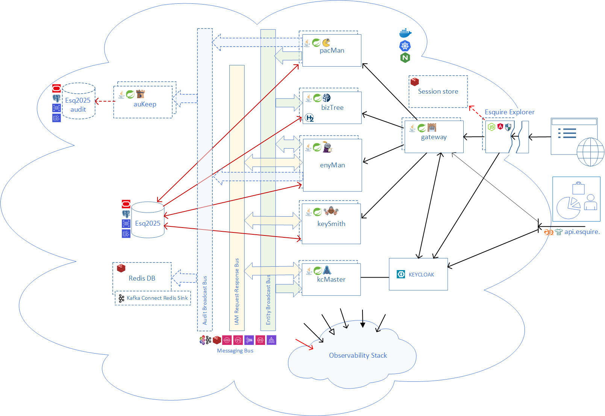
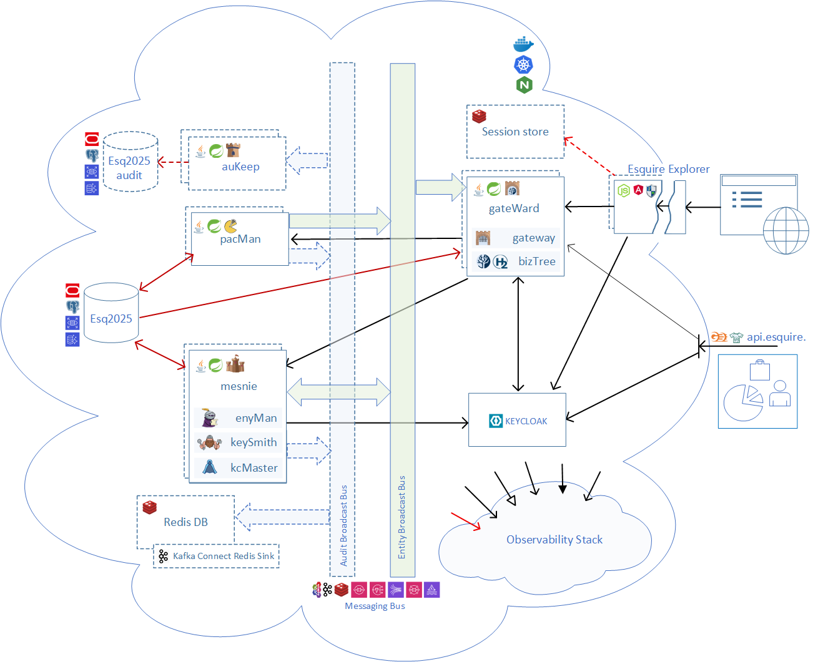

Decomposition is not microservices (draft)
Microservices were named in 2014: "an approach to developing a single application as a suite of small services, each running in its own process" [1]. The idea: decompose a monolith so it can be maintained, scaled, and kept running in parts.
This definition ties two decisions together. And since then, most architectural debates have concentrated on the "weld" — rather than on either decision.
The first decision is decomposition. Where the seams in your system are. What talks to what, through which contract, and what each part is allowed to know about the others. It is a design question; it is answered during the initial system development; and it is expensive to change afterward.
The second decision is packaging. Which parts share a program, and how many programs run, on how many machines, across how many network hops, through how many deployment pipelines? Those are operational questions; they are answered at deployment; and they should be cheap to change.
The pattern forces a single decision: a module is what gets deployed. Production has its own reasons to decide — the budget, the nodes, the latency it can accept. Nothing says where one decision ends and the other begins.
Moving off the strict form is not a fringe position. Google surveyed its own infrastructure teams and found that the approach "often backfires, introducing challenges that counteract the benefits the architecture tries to achieve"; its answer is to write applications as logical monoliths and "offload the decisions of how to distribute and run applications to an automated runtime" [2]. Uber, at around 2,200 microservices, reorganized around "collections of related microservices... We call these domains" [3].
Decompose by design, then aggregate by deployment. A claim like this one requires proof.
The shape to start from
The pattern splits a system "around business capability" rather than by technical layer [1]. Each service owns an area of the business, talks to the others over the network, and is deployed as its own program.
The pattern treats business services, and only those. Isolating them leaves other kinds behind: gateways that convert protocols, apply the security stack, and route requests; adapters that speak external protocols — a broker, a database, or a vendor API. The host that serves a user interface — a web application, a web server, a Node process — counts the same way, as a service. There are Services and services, and both need the same treatment: design, code, build, deploy, monitor, maintain.
Esquire, the framework powering this experiment, was split into eight programs: three business services and five on staff. The first three are an entity service, a credentials-and-roles service, and an accounting service. The staff: an asynchronous IAM adapter (keeping the user directory in sync), an audit writer, a gateway, a tree cache, and the host that serves the administrative interface. The seams between services were designed first: typed events on a messaging bus, interfaces rather than reach-in calls, no shared tables.

The drawing shows two database instances. That is a deployment choice, not a design one. The pattern says each service should "manage its own database" [1]. That is usually read as one database server per service. Strictly, it says: own the data. One service owns its tables, and nobody else touches them. Where those tables live — one database, a schema each, separate servers — is settled at deployment, by your DBA.
Separate a service's data physically, and you give up the foreign key, the join, one transaction across two tables. "Distributed transactions are notoriously difficult to implement" [1]. The work does not disappear — it should move into your code, where you reinvent what the database already has.
With redundancy, the number of processes doubles: on Kubernetes, that is sixteen pods. At least four nodes are required. Add an extra one for infrastructure (the database, broker, identity, and session store): five nodes in total.
What was merged, and what was not
Of the eight, two groups merge, and three programs stay as they are. That makes five.
- The gateway and the tree cache become one. One task: answer a tree read as fast as possible. The two are a couple: the gateway routes the request, and the cache answers it. Merging them removes the wire and the hop between them. The trade-off is that the gateway stops being a thin front door. A real one is never quite stateless anyway — it caches tokens and sessions — but with the tree inside, it warms up before it can serve.
- The entity service, the credentials service, and the IAM adapter become one. One task again: two business services working with entities, both wired to the same IAM adapter behind them. Merged, the adapter no longer needs its own process, and the two wires are replaced by an in-process queue.
- The accounting service stays its own program. It is where the domain logic is applied. Any other domain could stand in its place: the same slot, a different business. It has its own development cycle, release pipeline, and workload.
- The audit writer stays its own program. Its task is the durable record, it is off the request path, and it needs its own redundancy. Every service writes to it, so folding it means folding it into all of them: the end of the decomposition idea. It stays alone.
- The interface host stays its own program. Its task is serving the browser, and it runs on a different runtime: Node, where everything else is Java. Nothing crosses that line.
Aggregation is not "merge everything that compiles". Merge the services that share a job, and leave alone the ones where merging would cost more than it saves.
The shape it lands on
Five programs: two business services staffed by three. The entity service, the credentials service, and the IAM adapter in one. The gateway and the tree cache in another. The accounting service, the audit writer, and the interface host as they were. With redundancy, that is ten pods on three nodes, plus the one for infrastructure. Four nodes, against five for the unfolded classic shape.
| classic | compact | |
|---|---|---|
| the entity and credentials services, and the IAM adapter | three programs | one program |
| the gateway and the tree cache | two programs | one program |
| the accounting service | its own program | its own program |
| the audit writer | its own program | its own program |
| the interface host | its own program | its own program |
| messaging buses defined | 3 | 2 |
| broker destinations | 4 | 2 |

No service was rewritten to get from one column to the other. The compact shape has two wrappers, one per merged group. Each starts the parts it carries and owns the process. That is possible because a service's code ships with two entry points: 1) run as a standalone process, 2) the starting hook for a wrapper. The wrapped services are talking through a defined seam.
That is correct as it stands: "no service was rewritten". Instead, two wrappers were added, each written for one concrete grouping: merge these three, merge those two. The pattern behind them is the same in both: start the service's parts, the seam carries on inside the process, a message handler stays asynchronous. For a composition to be officially recognized as a deployment choice, the wrapper has to be generic: it takes its grouping from configuration, so that a new composition costs no coding effort. That is the finding this experiment leaves on the framework's backlog.
Each service keeps its own codebase and its own tables. The change is that they are deployed together instead of alone.
Merging does not change the seam; it changes the transport under it. What goes away is a network hop and a second copy of the application runtime stack: the JVM, the drivers, the connection pools, the framework layers.
What it cost, and what it bought
The measurement rig rebuilds from nothing per cell — stack down, volumes dropped, database re-seeded, identity realm re-imported — then drives a 200-user load through the gateway until throughput stops climbing. Same box, same load profile, observability off:
| plateau throughput | |
|---|---|
| eight programs | 1,228 requests/sec |
| five programs | 1,232 requests/sec |
A difference of 0.3%, which is inside the noise of the rig. Three programs fewer, the same work done.
Two honest notes about that number, because it is the one everything else leans on. The two figures come from two measurement runs five weeks apart on the same machine and the same protocol, not from one alternating A/B. And it is one box under one load profile — it says what composition costs there, not what it costs at a scale neither shape was measured at.
Where it shows is the request an administrative interface makes most: navigation over the tree. That read is cheap in itself — two or three milliseconds of logic, served from the cache, no database work — and the gateway's own work is about two more. On the cloud cluster a warm read costs fifteen to thirty-five milliseconds of server time, so what remains after the gateway's own work and the service logic is the hop between them, across nodes. Folded, that hop is gone: the read is answered inside the process that received it.
What the split was costing is easier to see in the cloud. The budget there did not stretch to eight programs and a second copy of each. Folded, it stretches to two replicas of every program: the redundancy came out of the packaging decision, not out of a bigger bill.
The second replica goes further, not less far. The reflex objection is that fewer, larger processes must scale worse. On this rig they scaled better:
| one replica | two replicas | gain | |
|---|---|---|---|
| eight programs | 1,228 | 1,883 | +53.3% |
| five programs | 1,232 | 2,054 | +66.7% |
Fewer, larger processes leave more headroom per pod before the machine saturates, so the second copy has more of the machine left to use. Eight programs on one box spend a share of it on being eight programs.
Some costs disappear rather than move. The one that was not expected. With logging on, the five-program shape does not merely relocate the logging cost — it removes part of it. Five programs log a request once where eight logged it at every hop. A request that crossed three services left three sets of entry and exit lines; merged, it leaves one.
Tracing and metrics do not shrink the same way — they are per request and per span, and the request count did not change. But the log volume is a function of how many programs the request walked through, which is a packaging property, not a design one.
For context on why that matters at all: on the cloud cluster, logging is 88% of the observability bill — and 79% in the eight-program shape measured earlier. The pillar that dominates the cost is the one the composition shrinks.
What makes it possible
In Esquire, each service is a set of parts and a program, written as two separate things, and the folded process is a third program that hosts the parts it wants. Nothing was copied, and nothing was rewritten.
Four properties, and none of them is specific to a language or a framework.
- A service has two entry points. One starts it as a program. The other hands its parts to a host process. The second one is what folding uses, and most stacks already have a way to express it.
- Process-level resources belong to the host. One audit sink, one role store, one lifecycle for the messaging legs. A service asks for them; it does not create them. Two services that each create their own cannot share a process.
- Services address each other by channel name, not by address. The transport behind the name is a deployment choice: a broker when the two ends are apart, an in-process queue when they are together. Neither side's code changes.
- A host can take part of a service. When it needs one capability and not that service's background work, it takes the capability and leaves the rest unstarted.
What holds beyond one system
These services fold because they were never separate contexts. They speak one language about one data model and share a kernel of common code. They are a functional partition of one domain — which is exactly why they can be merged, and exactly why services that are genuinely different domains, with different vocabularies and different owners, cannot be. For them the process boundary is carrying an organizational boundary as well, and that is a real job the network hop is doing.
So this is not "microservices were a mistake". It is narrower: if your services are one system split by function, the split into processes is a deployment decision and should be treated as one. A great many systems that call themselves microservices are exactly that, which is why the migration stories keep being written.
What you give up when you fold, stated plainly:
- Independent scaling. A merged process scales as one thing. If one part inside it is the hot one, you carry the others along with it.
- Independent deploy. Same reason. A shared kernel makes it worse: one method added to a shared module can force every image to be rebuilt, because each image carries its own copy.
- Blast radius. Fewer programs means a failure takes more with it.
- Statelessness, where you had it. A thin front door that absorbs a cache is no longer thin or stateless: it warms up before it serves, and every copy carries its own state.
Those are real, and for some systems they are decisive. The argument is not that they never matter. It is that they are deployment trade-offs, and you should get to make them per environment rather than have them fixed in the architecture — which is precisely what happens when the two decisions are one decision.
The same code can run folded in one environment and unfolded in another. Nothing is migrated, and no branch exists for "the small version".
Design your seams as carefully as microservice advocates say you should. Then package them as loosely as a monolith advocate would. The reason those two positions have been fighting for a decade is that everybody kept assuming you could only have one.
Decomposition and aggregation are one method with two steps. You split by design, because that is where the seams belong. Then you aggregate by deployment, because that is where efficiency is. The second step has rules of its own.
Decoupling, and then aggregation
Group by task before you look at anything else. A service exists to do a job in the system: answer the user's request quickly, work with entities, carry a business domain, keep a durable record. Services that share a job belong in one block. Services with different jobs do not, however conveniently they would fold.
Then draw the system as a schematic. Every service is a block, every channel between them is a wire, and the messaging bus keeps the drawing readable. Draw it at the replica count you intend to run, not at one copy each. What the code does inside a block does not matter here; this step is about connection points.
- A different runtime ends the question. Two blocks that do not run on the same runtime cannot share a process, whatever their tasks have in common. Check that first and save the rest of the work.
- Within one task, merge blocks to remove wires. Two blocks joined by a wire that carries only their own traffic: merge them and the wire is gone.
- Follow the wires to the third block. Two blocks that both wire to the same third one are one candidate, not two. Merging all three removes two wires at once.
- Redundancy belongs to the task. Each block is replicated for the job it does, and merging two tasks welds their scaling together. That is the cost that is easy to miss: after the merge you cannot give one of them a second copy without giving it to the other.
- Leave the wires that are doing a job. A wire that carries durability, separates an owner, or feeds a store with a different shape is not waste.
The result is a compromise, and it should be: the fewest blocks whose remaining wires all earn their place.
Decompose by design. Aggregate for efficiency.
References
[1] James Lewis and Martin Fowler, Microservices, 25 March 2014 — the article that named the style and defined it by how it is deployed.
[2] Sanjay Ghemawat, Robert Grandl, Srdjan Petrovic, Michael Whittaker, Parveen Patel, Ivan Posva and Amin Vahdat (Google), Towards Modern Development of Cloud Applications, HotOS '23, June 2023 — microservices conflate logical boundaries with physical ones.
[3] Adam Gluck, Introducing Domain-Oriented Microservice Architecture, Uber, 23 July 2020 — grouping services into domains at around 2,200 microservices.
The system is Esquire, a framework for backoffice systems — Java and Spring Boot, an Angular front end, Postgres or Oracle, identity synchronized to Keycloak. The measurements above come from its own load harness, and the matrix documents with every cell in them are in the repository: github.com/mir0n-pro. A deployment is running at esquire.mir0n.pro — sign in with mainadmin / q, it is a demonstration tree. The data is reseeded from time to time.